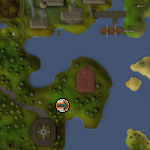

")
Transportation - Fairy Rings
Introduction
After getting permission from the Fairy Godfather during Fairy Tale part II - To Cure a Queen, you will find a new network of transportation available to you: fairy rings.

The main fairy ring is located in Zanaris, just east of the bank. When you click on it to activate it, you will notice the three mushroom controllers pop up. Each controller has four letters assigned to it. Clicking on a mushroom will rotate the letter clockwise. You can make many combinations from these mushrooms, and click the teleport button to go the location.
The main locations are listed below, but if you try other combinations you may find yourself in weird and wonderful locations. The fairies are usually happy with the locations of the fairy rings, but on occasion they may change their minds and retarget a ring to a new location.
Locations
| Location | Code required |
Quest Requirement | Location | Code required |
Quest Requirement | |
![[image: location of mudskipper point fairy ring]](../../img/main/kbase/guides/transportation/maps/aiq.jpg "location of mudskipper point fairy ring") Mudskipper Point |
AIQ | None | ![[image: location of witchaven island fairy ring]](../../img/main/kbase/guides/transportation/maps/air.jpg "location of witchaven island fairy ring") Island south of Witchaven |
AIR | None | |
![[image: location of dorgesh-kaan fairy ring]](../../img/main/kbase/guides/transportation/maps/ajq.jpg "location of dorgesh-kaan fairy ring") Dorgesh-Kaan Agility Course |
AJQ | Death to the Dorgeshuun | ![[image: location of fremennik dungeon fairy ring]](../../img/main/kbase/guides/transportation/maps/ajr.jpg "location of fremennik dungeon fairy ring") Fremennik Dungeon Entrance |
AJR | None | |
![[image: location of penguin island fairy ring]](../../img/main/kbase/guides/transportation/maps/ajs.jpg "location of penguin island fairy ring") Penguin island |
AJS | None | ![[image: location of piscatoris fairy ring]](../../img/main/kbase/guides/transportation/maps/akq.jpg "location of piscatoris fairy ring") Piscatoris Hunter Area |
AKQ | None | |
![[image: location of feldip hills fairy ring]](../../img/main/kbase/guides/transportation/maps/aks.jpg "location of feldip hills fairy ring") Feldip Hills |
AKS | None | ![[image: location of Gu'Tanoth cave ring]](../../img/main/kbase/guides/transportation/maps/alp.jpg "location of Gu'Tanoth cave ring") Gu'Tanoth cave (south of Jiggig) |
ALP | A Fairy Tale Part III - Battle at Orks Rift | |
![[image: location of haunted woods fairy ring]](../../img/main/kbase/guides/transportation/maps/alq.jpg "location of haunted woods fairy ring") Haunted Woods |
ALQ | Priest in Peril | ![[image: location of abyssal fairy ring]](../../img/main/kbase/guides/transportation/maps/alr.jpg "location of abyssal fairy ring") Abyssal area |
ALR | None | |
![[image: location of mcgrubor's wood fairy ring]](../../img/main/kbase/guides/transportation/maps/als1.jpg "location of mcgrubor's wood fairy ring") McGrubor's Wood |
ALS | None | ![[image: location of kalphite hive fairy ring]](../../img/main/kbase/guides/transportation/maps/biq.jpg "location of kalphite hive fairy ring") Kharidian Desert near the Kalphite Hive |
BIQ | None | |
![[image: location of sparse plane fairy ring]](../../img/main/kbase/guides/transportation/maps/bir.jpg "location of sparse plane fairy ring") Sparse Plane |
BIR | None | ![[image: location of ardougne zoo fairy ring]](../../img/main/kbase/guides/transportation/maps/bis.jpg "location of ardougne zoo fairy ring") Ardougne Zoo (unicorn pen) |
BIS | None | |
![[image: location of ancient cavern fairy ring]](../../img/main/kbase/guides/transportation/maps/bjq.jpg "location of ancient cavern fairy ring") Ancient Cavern |
BJQ* | None | ![[image: location of castle wars fairy ring]](../../img/main/kbase/guides/transportation/maps/bkp.jpg "location of castle wars fairy ring") South of Castle Wars |
BKP | None | |
![[image: location of enchanted valley fairy ring]](../../img/main/kbase/guides/transportation/maps/bkq.jpg "location of enchanted valley fairy ring") Enchanted Valley |
BKQ | A Fairy Tale Part III - Battle at Orks Rift | ![[image: location of mort myre fairy ring]](../../img/main/kbase/guides/transportation/maps/bkr.jpg "location of mort myre fairy ring") Mort Myre swamp |
BKR | Priest in Peril | |
![[image: location of tzhaar fairy ring]](../../img/main/kbase/guides/transportation/maps/blp.jpg "location of tzhaar fairy ring") TzHaar city, south area |
BLP | None | ![[image: location of Yu'biusk fairy ring]](../../img/main/kbase/guides/transportation/maps/blq.jpg "location of Yu'biusk fairy ring") Yu'biusk |
BLQ | Land of the Goblins | |
![[image: location of legends' guild fairy ring]](../../img/main/kbase/guides/transportation/maps/blr.jpg "location of legends' guild fairy ring") South-east of the Legends' Guild |
BLR | None | ![[image: location of miscellania fairy ring]](../../img/main/kbase/guides/transportation/maps/cip.jpg "location of miscellania fairy ring") North-west Miscellania |
CIP | The Fremennik Trials | |
![[image: location of tree gnome village fairy ring]](../../img/main/kbase/guides/transportation/maps/ciq.jpg "location of tree gnome village fairy ring") South of the Tree Gnome Village |
CIQ | None | ![[image: location of sinclair mansion fairy ring]](../../img/main/kbase/guides/transportation/maps/cjr.jpg "location of sinclair mansion fairy ring") Outside Sinclair Mansion |
CJR | None | |
![[image: location of starflower plane fairy ring]](../../img/main/kbase/guides/transportation/maps/ckp.jpg "location of starflower plane fairy ring") Starflower Plane |
CKP | A Fairy Tale Part II - Cure a Queen | ![[image: location of shilo village fairy ring]](../../img/main/kbase/guides/transportation/maps/ckr.jpg "location of shilo village fairy ring") Karamja, north-west of Shilo Village |
CKR | None | |
![[image: location of canifis fairy ring]](../../img/main/kbase/guides/transportation/maps/cks.jpg "location of canifis fairy ring") Canifis Mushroom patch |
CKS | Priest in Peril | ![[image: location of ape atoll fairy ring]](../../img/main/kbase/guides/transportation/maps/clr.jpg "location of ape atoll fairy ring") Ape Atoll, atop the Agility course |
CLR | A Fairy Tale Part III - Battle at Orks Rift | |
![[image: location of hazelmere's fairy ring]](../../img/main/kbase/guides/transportation/maps/cls.jpg "location of hazelmere's fairy ring") Hazelmere's peninsula |
CLS | None | ![[image: location of k'chunk island fairy ring]](../../img/main/kbase/guides/transportation/maps/dip.jpg "location of k'chunk island fairy ring") Mos Le'Harmless (K'Chunk's island) |
DIP | A Fairy Tale Part III - Battle at Orks Rift | |
![[image: location of gorak lair fairy ring]](../../img/main/kbase/guides/transportation/maps/dir.jpg "location of gorak lair fairy ring") Gorak lair |
DIR | A Fairy Tale Part II - Cure a Queen | ![[image: location of wizards' tower fairy ring]](../../img/main/kbase/guides/transportation/maps/dis.jpg "location of wizards' tower fairy ring") South of the Wizards' Tower |
DIS | None | |
|  Between the Necromancer's tower and the Tower of Life |
DJP | None | ![[image: location of south rellekka fairy ring]](../../img/main/kbase/guides/transportation/maps/djr.jpg "location of south rellekka fairy ring") West of Sinclair Mansion |
DJR | None | |
![[image: location of karamja fairy ring]](../../img/main/kbase/guides/transportation/maps/dkp.jpg "location of karamja fairy ring") Karamja, near Karambwan fishing spot |
DKP | None | ![[image: location of edgeville fairy ring]](../../img/main/kbase/guides/transportation/maps/dkr.jpg "location of edgeville fairy ring") East of Edgeville |
DKR | None | |
![[image: location of rellekka hunter area fairy ring]](../../img/main/kbase/guides/transportation/maps/dks.jpg "location of rellekka hunter area fairy ring") Rellekka Hunter Area |
DKS | None | ![[image: location of nardah hunter area fairy ring]](../../img/main/kbase/guides/transportation/maps/dlq.jpg "location of nardah hunter area fairy ring") Nardah Hunter Area |
DLQ | None | |
![[image: location of poison wastes fairy ring]](../../img/main/kbase/guides/transportation/maps/dlr.jpg "location of poison wastes fairy ring") Island in the Poison Waste |
DLR | None | ![[image: location of mort myre fairy ring]](../../img/main/kbase/guides/transportation/maps/dls.jpg "location of mort myre fairy ring") Passage beneath Mort Myre |
DLS | In Search of the Myreque | |
![[image: location of resistance hq fairy ring]](../../img/main/kbase/guides/transportation/maps/resistance_hq.jpg "location of resistance hq fairy ring") Fairy Resistance HQ |
AIR DLR DJQ AJS | A Fairy Tale Part II - Cure a Queen | ![[image: location of orks rift fairy ring]](../../img/main/kbase/guides/transportation/maps/orks_rift.jpg "location of orks rift fairy ring") Orks Rift |
BIR DIP CLR ALP | A Fairy Tale Part III - Battle at Orks Rift |
* Before the fairy ring in the Ancient Cavern can be used, it first needs to be repaired. To do this, you must first gain access to the Ancient Cavern by completing most of your Barbarian Training, then use five bittercap mushrooms on the fairy ring while carrying a spade.

More articles in
Transportation
|
|
|
Further Help
If this article does not help you, you may find the following sections of the RuneScape site helpful:
|
|